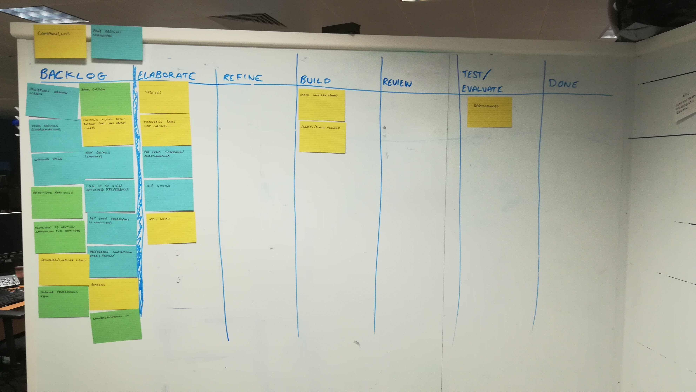
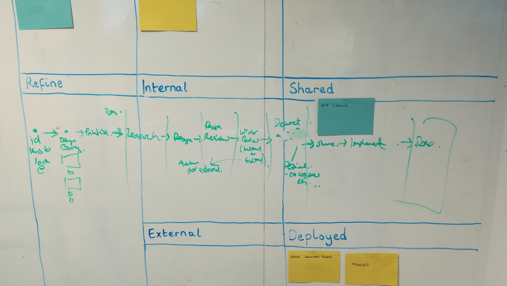
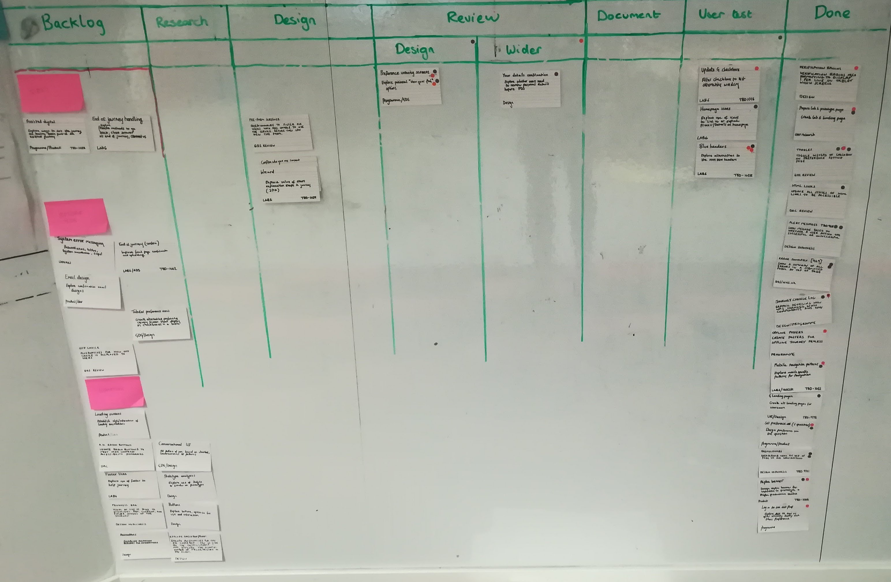

Kanban for interaction design
デザイナーのためにかんばんをする方法
Recently at work I have been using a Kanban board with a colleague to manage our design work.
Although early days, we have found it to be a real help and it has garnered some interest beyond the project we are on.
We started the board with the following goals:
- Track what each other is working on
- Record our design reviews and comments
- Better develop our design process (using hypotheses)
- Record design decisions and evidence for them
- Show our process to the rest of the project
- Be able to (visually) organise and priortise design work
- Involve our Product Owner in priortising what design work was being focused on
Even if you are the sole designer/UX person, it is valuable to be able to communicate with other people on a project what you are working on and your current priorities.
The board has helped us structure our work and track it better, as well as expose that workflow to other members of the team.
It has also shown us where our design bottlenecks are, and what things we need to swarm on together to speed up and get done.
It takes discipline to maintain but provides real value if you do.
So, what is Kanban?
If you've worked on a software project before, you may have encountered Kanban boards.
On a Kanban board, items (jobs, tasks or anything) are written on cards which sit on a board in a set of columns. Each column has a label indicating the cards status or activity. The cards move across the board as they change status.
The simplest Kanban boards are structured in three columns of "todo", "doing", "done". Often this board structure then evolves with a "backlog" or "ideas" column preceeding the todo column for ideas to be stored.
Ideas
Todo
Doing
Done
Like many workflows ours didn't feel like it fit with this simplisitic structure. But we did feel like this technique could help us structure our work.
How we implemented Kanban
The first step we took was to sketch out the phases a bit of design work would go through.
To test if it would work we realised we needed to get this on a whiteboard.
We found some whiteboard space (a precious commodity) and started to draw our board up.
We both knew this was going to be a long journey. There was also a risk of exposing our work too early and receiving too much input too soon. It's better to get something up and public. The risk was worth the reward.
First implementation
After going backwards and forwards over the column names, we sketched out our board and added some cards.
The idea behind the columns were:
-
Backlog
The is where our ideas live. Design hypotheses. Components to look into and explore. Things to optimise. Bugs or "That's not great is its".
-
Elaborate
The phase where we are actively working on a problem, but exploring the shape and size of it. Looking at current solutions and the reasons they exist, as well as other people's.
-
Refine
Here we are refining our ideas into testable chunks of work. Sketching paper prototypes. Thinking how a problem might be solved but an iterative area of work.
-
Build
The stage where we formally think an idea is worth pursuing. We have a hypothesis, we have refined it and now want to build something formally to test and review
-
Review
Formal review time. Either with a fellow designer or a member of the product team (or programme or beyond).
-
Test/Evaluate
Time to get it in front of people and work out if it has the desired outcomes.
-
Done
All work finished. Idea explored, built, reviewed, tested with users.
We got something up. And the second we did we saw what we felt was right, but also what we felt was missing.
We didn't know where and by whom something was reviewed. Nor did we get a good sense of what was bouncing around after review.
We also wanted to ensure our process was repeatable. Repeating high value things like documenting design decisions. We wanted to have that explicit, rather than implicit.
As designers we're part of the board and ceremonies for the development team. Our work feeds into the Scrum/Kanban flow of the development board, but we help with frontend tickets too.
It was clear immediately that the development board of the project we were on had informed us.
We had copied some of the naming conventions and flow. It felt like it captured some of what we wanted to do, but not enough.
Exposing the workflow
We had started using the board. As we used it and explained it, it felt like there needed to be an iterative pattern or process in the middle.
In hindsight, this is where we got a little too complicated early on. We knew we would see real value in exposing the iterative nature of our work. We struggled to find that balance.
Having looked for other examples of designers using Kanban, I stumbled across this blog post about Kanban. It explained how Conceptboard had used it.
I thought the Z-shaped pattern quite interesting. It showed the iterative pattern of a design artefact going through rounds of review and refinement.
Inspired by this, we created a less-conventional Kanban design that looked like the below:
Backlog
Research
Design
Prototype
Refine
Review
Design
Project
External
Done
Documented
Shared
Deployed
The idea behind this structure is that important sub-phases of design are exposed. The flow of a card on this board is still left to right but if a card merited it, it could fall through additional phases.
A card that goes through review would jump from Design - Prototype to Review - Design moving after that again into the Design column but this time in the Refine cell.
Cards would now move through a Z-shape or in a circular fashion. Their iterative journey surfaced.
Our second feature was the drawing out of what wanted to make sure we did with each bit of design work. The process of documenting and sharing our work and then getting it in a product (prototype or production).
Looking at this now it is easy for us to see the faults. At the time we were so close to it, it took us time to step back and see what was working and what wasn't.
We sacrificed the simplicity of our board to expose the iterative flow. We had completely messed up any notion of done by filling things in that column rather.
Wider feedback
I now felt ready to ask for some feedback.
I grabbed an experienced service designer I knew and walked him through the board.
It was great to hear he loved what we were doing. He also poked and prodded the thinking behind everything.
Taking the time to explain your concept is often the quickest way to expose the holes in your thinking. This is because you have to explain your idea without your hidden assumptions and background knowledge.
The complicated nature of the flow was clear. Not in the fact that the designer couldn't understand and appreciate the flow, but that he was completely unsure of how it would work by looking at it.
Another interesting point the service designer made was about our prioritisation of cards.
I mentioned that we wanted to have a sense of what was more important. Our idea was to rank cards and show that on the board with high priority cards being at the top of the Backlog.
As I was talking through the board the head of the user research profession walked by. She asked a couple of questions too. A real reminder of the amazing place that I get to work where I can casually talk to two amazing, talented and experienced individuals about a sub-project I am passionate about.
Designing the card
As we had been iterating our board we had been taking real design tasks through them. The design of our cards hadn't received much love or attention at this stage.
At first our cards consisted of their title.
Then we added a short description.
We started to toy with the idea of colour indicating the type of design work. This was something that the developer board of our project did well.
I grabbed our Product Owner to walk them through the board.
They appreciated the clarity into our process and what we were working on. The ability to influence and ensure things he saw down the line would be accommodated.
They added that it would be valuable for them to be able to see where design issues or tasks came from.
This felt like that a great idea. On each card we added a "referral" tag. This one-line tag, indicated where the problem or task came from.
Title of the Kanban card
Description of the hypothesis, thing to explore or issue raised
Originator of idea/issue (Project, Lab etc.)
We now had a stronger structure for our cards.
At this stage, it felt like an optimisation too far to use coloured cards. We knew there was value to that system of categorisation. But it felt like a premature optimisation.
We also had plenty of space left on the card to add things like tags, avatars and Jira numbers. And plenty of time to have finer grained categories too, further down the line.
Simplifying it
The board now felt like it was adding value. The cards were now easier to understand and the board was explicit at which stage our work was.
The development team we sit in has a very experienced Scrum Master. I felt the board and my ability to explain it was now at a point where I could expose it further and to more rigorous examination.
We grabbed some time and took them through the board.
The board received more love. But the Scrum Master also noted two things they would change:
- The board column structure was too hard to understand at first glance
- We didn't really have a real done column
It would have been easy to argue with the Scrum Master and say that an iterative process cannot be displayed in a linear fashion.
However, this was the third or fourth time we had heard something similar about the visual structure. Every time we explained it, people understood it. But we wanted this board to expose something about how we worked to our project and the wider organisation.
Asking the Scrum Master about other ways of displaying iterations he mentioned the use of sticky dots.
This idea seemed like a very neat way of indicating what had been reviewed and by whom.
Taking this opportunity we went back to basics. We explained our work flow and design process to the Scrum Master who scribbled on the board as we did.
We had another iteration
Another iteration
The outcome of the session with the Scrum Master meant we had an alternative way of displaying our iterative process as well as some tweaks to our columns.
We drew up our board and made a few tweaks again.
Our new column structure was:
-
Backlog
The is where our ideas live. Design hypotheses. Components to look into and explore. Things to optimise. Bugs or "That's not great is its".
With the product team, we routinely rank and evaluate items here. Ensuring everything has been designed and tested before being put into the product.
To illustrate something is more important, it sits higher up the board.
-
Research
The phase where we are actively working on a problem, but exploring the shape and size of it. Looking at current solutions and the reasons they exist, as well as other people's.
-
Design
Here we are exploring and then refining our ideas into testable chunks of work. From sketching paper prototypes to screens or HTML.
If an item has a sticky note, it has been reviewed and an indicator of an item going through some further refinement or exploration.
-
Design Review
Formal review time. With another designer. The idea here being that we stage a time for each and every piece of design work.
Comments and suggestions are made and then saved. A sticky dot with the reviewer's initials are added.
If the item is deemed to need some further work, it can go back to the design column. If it is ready for wider review or would benefit from it, it moves forward.
-
Wider Review
Review with the wider team/s. This ranges from informal to formal reviews with the product team to more formal processes including the wider programme, other organisations and entities.
After this stage, as with the design review column, a sticky dot is added. The name or initials of the reviewers are added.
The card then can return to design or move forward.
-
Document
A staging area where we either create or collect our design artefacts together in one place.
We also add a design hypothesis (or two) to each ticket to surface our assumptions.
-
User test
Time to get it in front of people and work out if it has the desired outcomes.
-
Done
All work finished. Idea explored, built, reviewed, tested with users.
Bottlenecks
We found two bottlenecks very quickly with this process. Design review and document.
The bottlenecks were faults of our own.
Taking time to formally review, rather than quick glances, slowed things down.
It is easy to review design work and not question enough with a colleague. To give a quick glance and a supportive remark.
As well as make the time to thoroughly review things, it was clear that we needed to pass through things to review quicker as well. There is always the temptation to hold onto things until they are perfect.
This makes reviewing harder. It also takes a lot longer and can stall other work you or colleagues have.
The board highlighted that we needed to review early and often.
Documenting things well can be a tough task. The board revealed to us we weren't documenting as we went enough and this added another bottleneck.
The answer is of course "be better at documenting" but also make it easier to do.
Using a hypotheses driven design method we adopted a lean way of articulating our design decisions and what we were aiming to test with each change.
We also used the comments section of a corresponding Jira card to document our review as well as attach any screenshots, PDFs, sketch files or links.
Because we made it easier to document our design decisions, we got better at documenting as we went.
Benefits of using Kanban
Our journey using the Kanban board has only just begun but we've seen some real value already.
With it we're able to:
- Track what each other is working on
- Easily record our design reviews and comments
- Involve our team in our process
- Continuously inspect our process and decisions
- Make better stuff
It has played a core part of integrating our design process into the wider product and team. It has improved us as designers. It has organised and evolved our process. It has made it easier to work together.
If you're considering using one, do it!